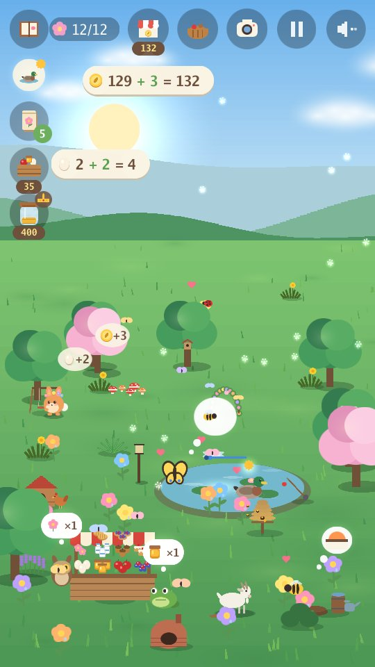
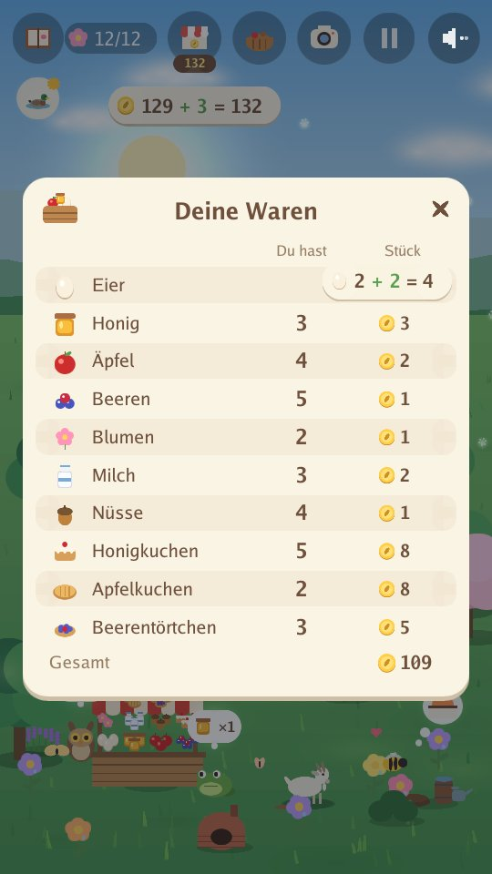
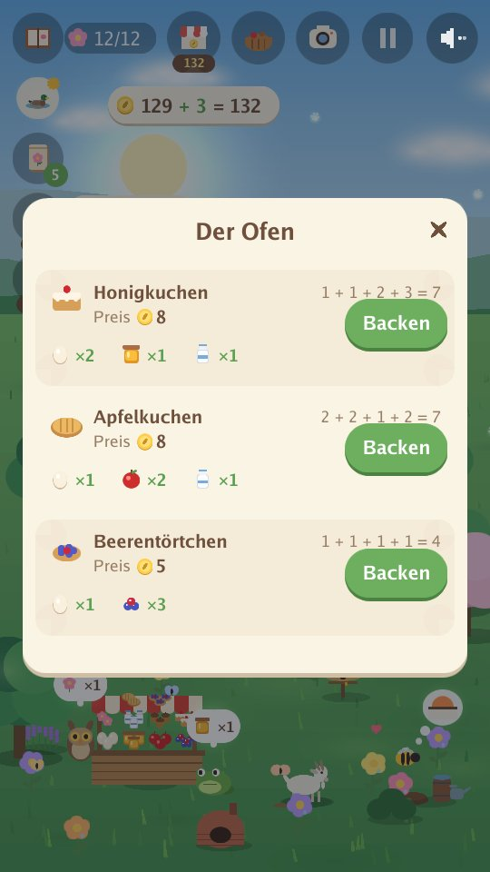
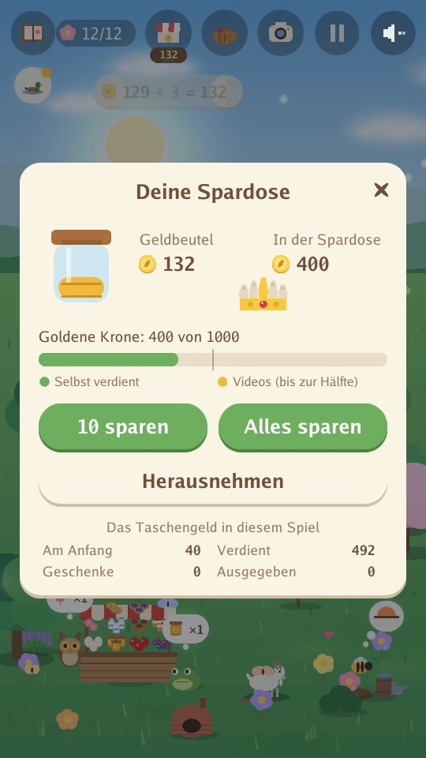

Arnoob Land
Ein ruhiges Naturspiel für Kinder

Ein stiller Garten braucht deine Hilfe. Ein kleiner Hase möchte ihn wieder zu einem Zuhause machen, Samen für Samen. Pflanze Blumen, bau einen Teich, leg Leckerlis hin und schau, wer zu Besuch kommt. Jede Jahreszeit bringt neue Tierfreunde: Bienen und Enten im Frühling, Schildkröten und Kolibris im Sommer, Füchse und Dachse im Herbst, Schneeeulen und Otter im Winter.
- Ruhig und sanft: keine Uhr, keine Punkte zum Verlieren, nichts, was schiefgehen kann.
- Nur Klänge der Natur: Wind, Wasser, Regen, Vögel und Tierstimmen. Keine Musik.
- Vier Jahreszeiten und 80 Tiere zum Anfreunden, dazu goldene Tiere und seltene Momente zum Entdecken.
- Schau dir den Mond an: Nacht für Nacht wandert er vom Neumond zum Vollmond und zurück, und Eulen lieben Vollmondnächte.
- Mach Fotos von deinen Tierfreunden für dein Album: Jedes Foto bringt eine Münze.
- Lerne, für Freunde zu sorgen: Achte darauf, was jedes Tier braucht, und bau ihm ein Zuhause (einen Teich, einen Holzstapel, einen Beerenstrauch...), dann kommen neue Freunde schneller; erfülle ihre Wünsche, hilf zwei Freunden, zusammen zu spielen, schenk einem Freund eine Blume und sieh zu, wie Freundschaften wachsen.
- Führe einen kleinen Hof: Füttere die Hühner, kümmere dich um Bienen und eine Ziege, pflück Äpfel, Beeren und Blumen und verkauf sie an deinem belebten Marktstand an die Freunde, die zum Einkaufen kommen. Was du gekauft hast, kannst du für den halben Preis zurückverkaufen, außer Teich, Pflanzen, Samen und Bäumen.
- Sei Gartenhelfer: Zupf Unkraut, rech Laub und räum Schnee für den Komposthaufen weg, der eine Extraernte und einen schnelleren Hof bringt, und gieß die Blumen und Obstbäume. Jede Arbeit hebt deine Stufe als Gartenhelfer.
- Backen und Bestellungen: Mach aus Eiern, Milch, Honig, Äpfeln und Beeren Kuchen, Törtchen und Marmelade, die mehr einbringen, und rechne die Summe aus, wenn ein Freund eine kleine Bestellung bringt.
- Rechnen beim Spielen: Jedes gesammelte oder verkaufte Ei und jede verdiente oder ausgegebene Münze erscheint als einfache Rechnung, wie 3 + 2 = 5.
- Lerne sparen: Leg Münzen in deine Spardose, sieh zu, wie sie jeden Tag ein bisschen wächst, und spar für die goldene Krone.
- Bau die goldene Krone Stück für Stück: Sparen füllt sie mit Gold, und deine Freunde bringen ihre drei Edelsteine.
- Ein ruhiges Spiel in jeder Jahreszeit: Angeln (die Fische schwimmen wieder frei), Glühwürmchen sammeln (sie fliegen danach davon), Nüsse und Äpfel im Herbst ernten und eine Schneeburg bauen.
- Verstecken mit Freunden: Ab deinem fünften Freund verstecken sich deine Freunde im Garten und spielen zusammen, und wenn du alle gefunden hast, kommen goldene Freunde öfter.
- Acht Sprachen: Englisch, Arabisch, Chinesisch (vereinfacht), Französisch, Deutsch, Japanisch, Russisch und Spanisch. Das Spiel startet in der Sprache deines Handys (bei jeder anderen auf Englisch), und mit der Weltkugel auf dem Startbildschirm kannst du sie wechseln. Das Spiel wurde auf Englisch geschrieben; die anderen sieben Sprachen wurden mithilfe von KI übersetzt.
- Eine lange, sanfte Reise: Spiel das ganze Jahr über viele Tage oder ein kürzeres Spiel mit nur einer Jahreszeit. Dein Garten wird beim Spielen gespeichert.
- Ein Traumgarten, wenn du magst: Spar für eine Schaukel, eine kleine Brücke, einen Brunnen, ein Baumhaus und mehr. Deine Freunde benutzen sie, und vier geheime Freunde kommen sie vielleicht besuchen.
Im Garten




Für Eltern
Keine Konten, kein Chat und keine Käufe. Videos laufen nur, wenn das Kind selbst eines ansehen möchte, für ein kleines Geschenk im Spiel: einen Korb Waren zum Verkaufen, ein paar Münzen, eine Überraschung für den Garten, Samen oder Leckerlis.
Datenschutzerklärung app-ads.txt